See it running
Live on an Android phone, attached to the public Reticulum mesh.
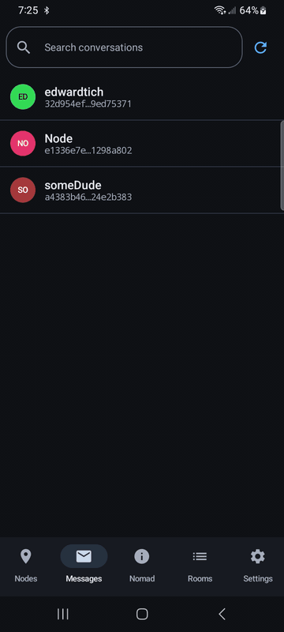
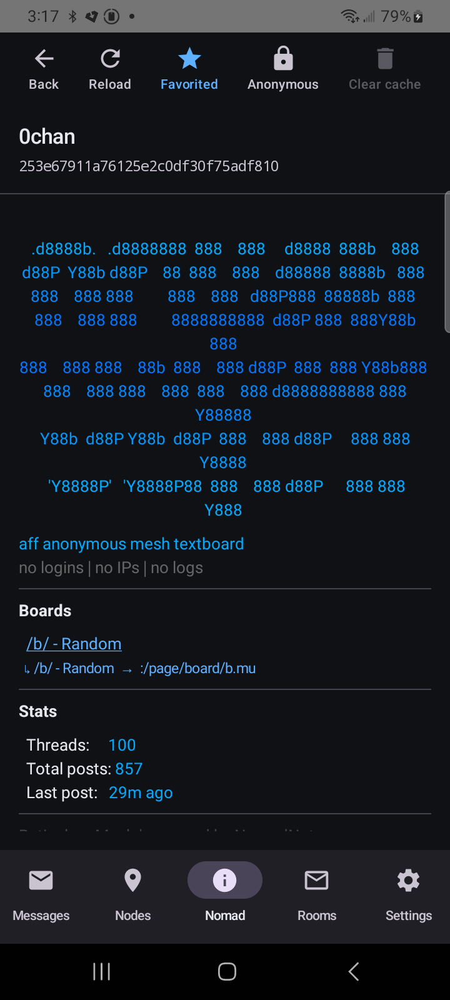
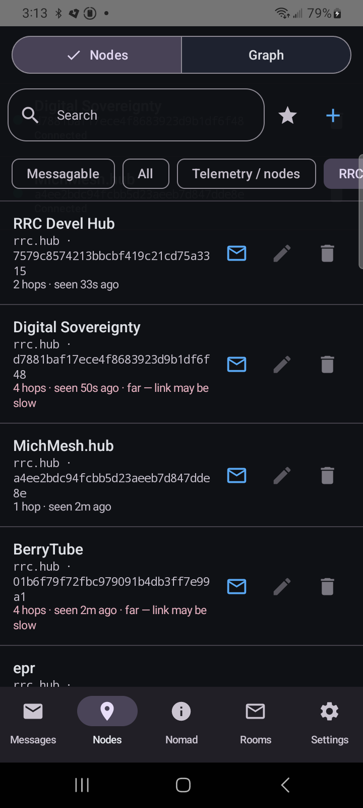
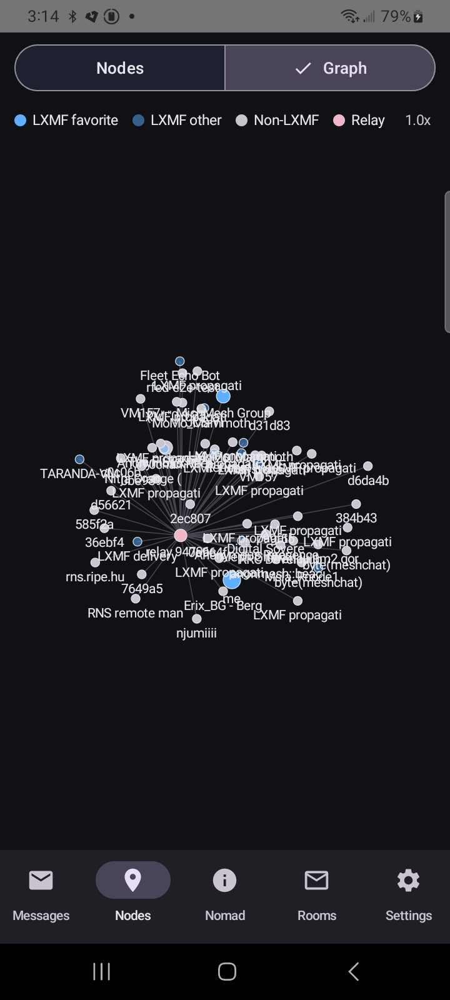
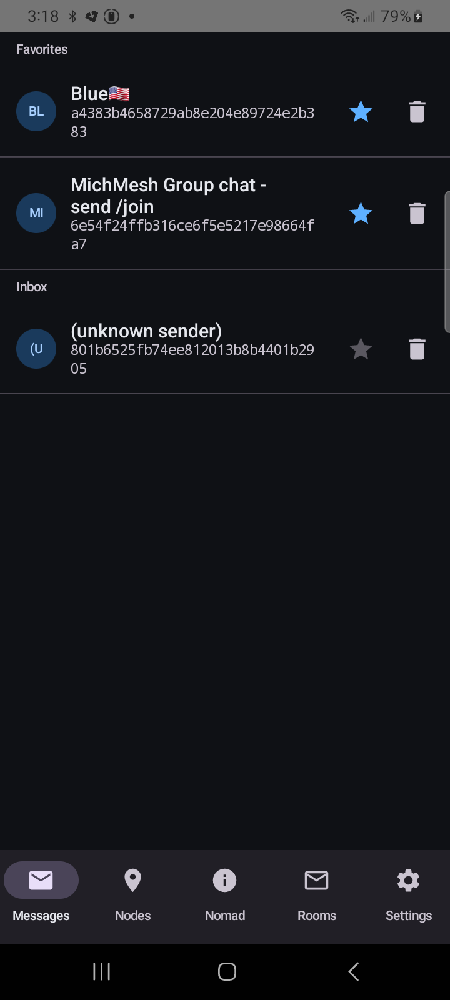
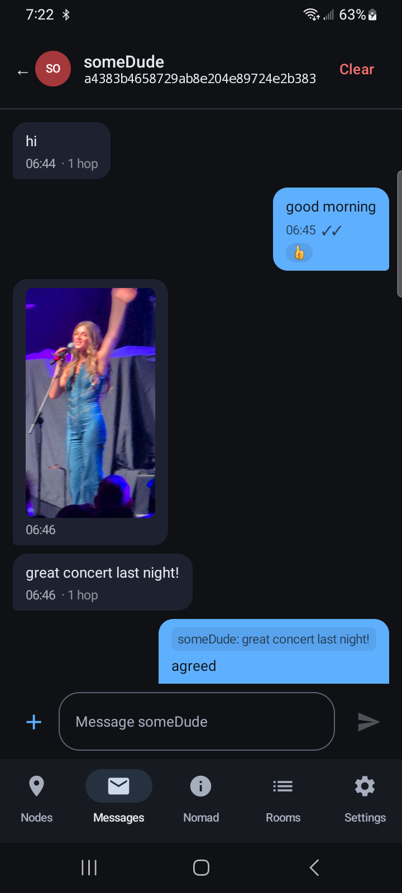
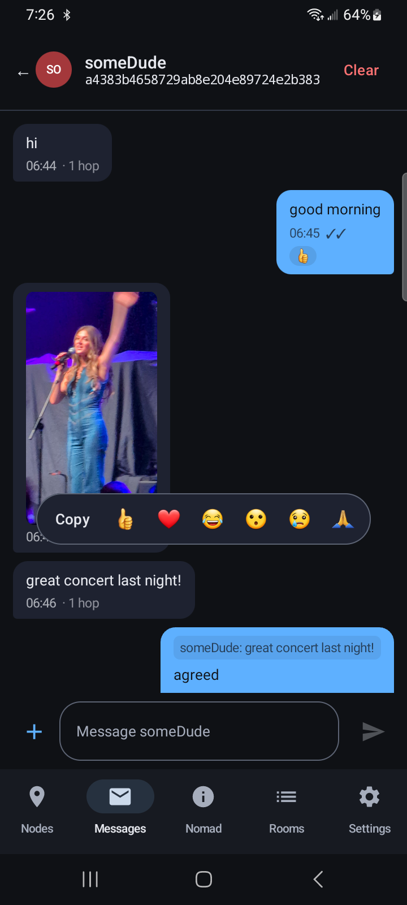
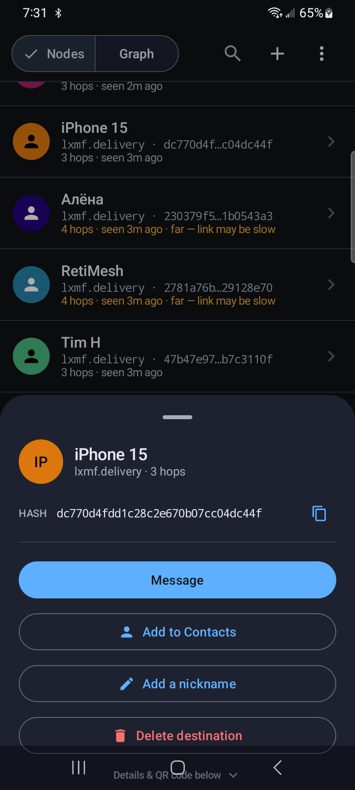
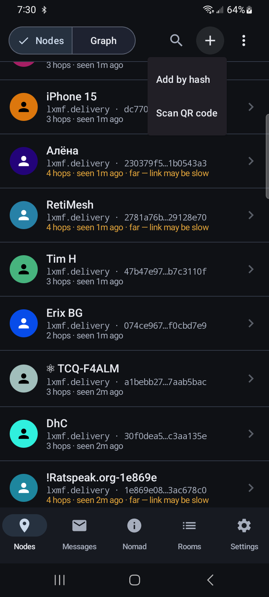
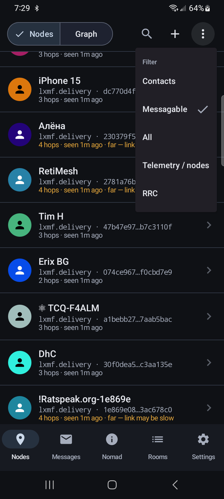
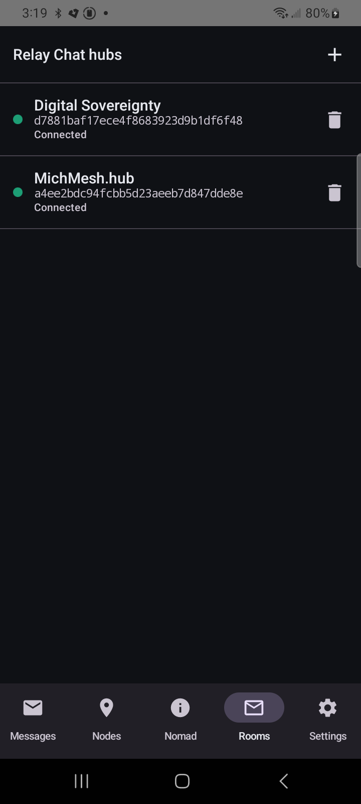
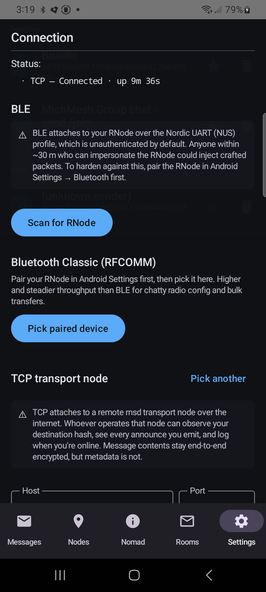
Messaging that needs no infrastructure
Every mainstream messenger depends on a company's servers — to route your messages, hold your account, and, almost always, to harvest who you talk to and when. Take the servers away and the app is a brick.
The Reticulum Mobile App is built the opposite way. It speaks Reticulum, a cryptography-based networking stack that carries traffic over LoRa radio, packet radio, or any TCP/IP link with no central authority anywhere in the path. There is no backend to this app. Nothing to sign up for. Nothing to shut down, subpoena, or sell. You can run it over the internet today and over a hand-built radio mesh tomorrow — same identity, same contacts, same app.
What it does
A complete Reticulum client, native on both platforms.
Encrypted messaging (LXMF)
End-to-end encrypted messages between identities — text, image and file attachments, emoji reactions and replies. Delivered over an encrypted Reticulum link with delivery proofs, or stored and forwarded through a propagation node when a peer is offline.
Works fully off-grid
Attach an RNode LoRa radio over Bluetooth or USB and message peers with no cell signal, no Wi-Fi, and no infrastructure at all. Or attach over TCP to a Reticulum transport node when you have a connection — or run several transports at once.
NomadNet page browser
Browse mesh-hosted NomadNet pages with full micron rendering — headings, tables, colours, server-side includes and interactive forms — and follow links from one node to the next across the network.
Reticulum Relay Chat
Opt-in IRC-style group chat: connect to a relay-chat hub and join rooms, right inside the app, layered on the same encrypted Reticulum links.
Persistent background listening
A foreground service keeps the radio link alive and raises a notification the moment a message arrives — even with the app closed and the screen off.
You own your identity
Keys are generated on-device and key-wrapped at rest. Export an encrypted backup, move to a new phone, or share your contact card as a QR code. No account, ever.
See the whole mesh
A live force-directed graph of network topology, a map of geolocated nodes, per-message link quality (signal strength and hop count), and a full diagnostics log.
Open & auditable
AGPL-3.0 licensed. Android builds are reproducible — two builds of the same release are byte-identical — and the security audit is public in the repository.
Who it's for
Off-grid & remote
Backcountry, sailing, rural land, anywhere cell coverage stops. A LoRa radio and this app are a complete messaging system.
Emergency & resilient comms
When the grid, cell towers or the internet go down, a Reticulum mesh keeps carrying messages on its own power and its own radios.
Privacy-minded
No phone number, no account, no backend collecting your social graph. Metadata stays on the mesh you choose to attach to — not in a company's database.
Radio & mesh experimenters
Amateur-radio operators and mesh-network builders get a real, native mobile client that interoperates with the wider Reticulum ecosystem.
Install
Free, and sideloaded by design — it never needed an app store.
Android
Download the signed APK from the latest release and install it.
For automatic updates with no Google account, install through Obtainium — tap the badge (with Obtainium already installed), or add the source URL below by hand:

github.com/thatSFguy/reticulum-mobile-app
iOS
An unsigned .ipa ships on every release. Re-sign it locally with a free
Apple ID using AltStore or SideStore — no paid
Apple Developer Program required.
In AltStore or SideStore, add this source URL to install and get update notifications automatically:
https://thatsfguy.github.io/reticulum-mobile-app/altstore.json
Frequently asked questions
What is Reticulum?
Reticulum is a cryptography-based networking stack for building resilient networks over anything that moves bits — LoRa radio, packet radio, serial links, or TCP/IP. It needs no central infrastructure, no DNS, and no addressing authority. This app is a native mobile client for it.
Does it work without the internet or a cell signal?
Yes. Attach an RNode LoRa radio over Bluetooth or USB and you can message other people entirely over radio — no cell service, no Wi-Fi, no infrastructure of any kind. When you do have a connection you can instead attach to a Reticulum transport node over TCP.
Is the app free?
Yes — free and open source under the AGPL-3.0 licence. No ads, no subscriptions, no in-app purchases, no telemetry.
Do I need an account or a phone number?
No. Your identity is a cryptographic keypair generated on the device. There is no sign-up, no email, no phone number, and no central server that holds an account for you.
What hardware do I need?
For off-grid radio use you need an RNode — a LoRa modem you can build yourself or buy pre-made. For internet use you need no extra hardware: just attach the app to a public Reticulum transport node over TCP.
Is it on the Google Play Store or Apple App Store?
It is not on the App Store. On Android you sideload the signed APK from GitHub Releases, or add the repo to Obtainium for automatic updates. On iOS you sideload the unsigned IPA with AltStore or SideStore using a free Apple ID.
Are my messages encrypted?
Yes. Message bodies are end-to-end encrypted with X25519 key exchange, AES-256, and HMAC authentication. Transport-node operators and anyone listening on the radio see only ciphertext, never message content.
Can it browse pages, not just send messages?
Yes. The Nomad tab is a full NomadNet page browser — it renders mesh-hosted pages with formatting, tables, forms, and links you can follow across the network.